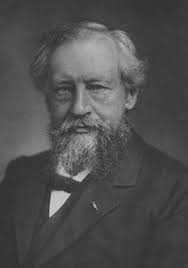

ЧТО ТАКОЕ МУТАЦИИ?

Мутации (от лат. mutatio — изменение, перемена), внезапно возникающие естественные (спонтанные) или вызываемые искусственно (индуцированные) стойкие изменения наследственных структур живой материи, ответственных за хранение и передачу генетической информации.
Способность давать М. — мутировать — универсальное свойство всех форм жизни от вирусов и микроорганизмов до высших растений, животных и человека; оно лежит в основе наследственной изменчивости в живой природе.
М., возникающие в половых клетках или спорах (генеративные М.), передаются по наследству; М., возникающие в клетках, не участвующих в половом размножении (соматические мутации), приводят к генетическому мозаицизму: часть организма состоит из мутантных клеток, другая — из немутантных.
В этих случаях М. могут наследоваться только при вегетативном размножении с участием мутантных соматических частей организма (почек, черенков, клубней и т. п.).
Внезапное возникновение наследственных изменений
отмечалось многими учёными 18 и 19 вв., было хорошо известно
Ч. Дарвину, но углублённое изучение М. началось лишь с зарождением на пороге 20 в. экспериментальной генетики.
Термин «М.» ввёл в генетику в 1901 Х. Де Фриз.